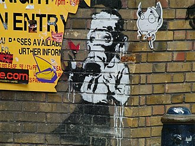
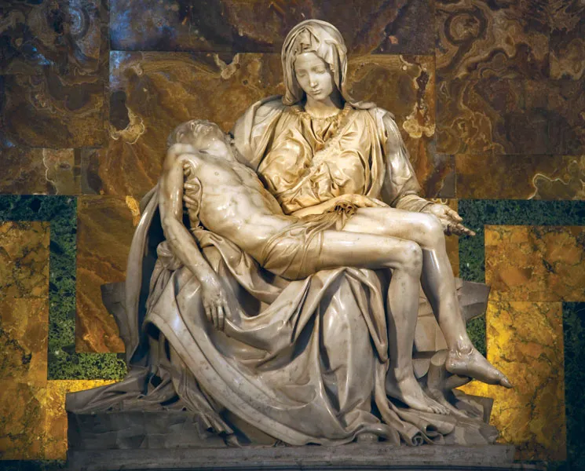

Andy Warhol

Andy Warhol was an American visual artist, film director, and producer who was a leading figure in the visual art movement known as pop art.
Liu Xiaodong

Liu Xiaodong is a Chinese painter of modern life, whose large-scale works serve as a kind of history painting for the emerging world.
Njideka Akunyili Crosby

Njideka Akunyili Crosby is a Nigerian-born visual artist working in Los Angeles, California, creating collage and photo transfer-based paintings.
Miquel Barcelo

One of Spain's most acclaimed contemporary artists, Miquel Barceló is known for his relief-like mixed-media paintings, bronze sculptures and ceramics.
Manal Al Dowayan

Manal Al Dowayan is a Saudi Arabian contemporary artist, best known for her installation piece Suspended Together from the Home Ground Exhibition at the Barjeel Art Foundation.
Adrian Ghenie

Adrian Ghenie is a contemporary Romanian painter, who works in Berlin, Germany, he does not use traditional tools of the painter or brushes, but a palette knife and stencils.
Banksy
Banksy is a pseudonymous England-based street artist, political activist and film director whose real name and identity remain unconfirmed and the subject of speculation.
Mariko Mori

Mariko Mori is a Japanese multidisciplinary artist, known for her photographs and videos of her hybridized future self, presented in various guises and featuring traditional Japanese motifs.
Afewerk Tekle

Afewerk Tekle was an Ethiopian artist, known for his paintings on African and Christian themes as well as stained glass, through the 1970s he produced murals and mosaics for many public and religious buildings.
Henri Matisse

Henri Émile Benoît Matisse was a French visual artist, known for his use of colour and his fluid and original draughtsmanship. He was a draughtsman, printmaker, and sculptor, but is known primarily as a painter.
John Dyer

John Dyer is Cornwall's best known and best loved contemporary artist. He is the artist in residence for the Eden Project and an official Artist for the Earth with EarthDay.org.
Tania Baca Alvarado

Mexico's Tania Baca creates dream-like surrealist landscape paintings that transmit a sense of tranquility and fantasy. Her unique style of bold and pastel color palette to depict nature has received much attention from art collectors.
Vivek Kumavat

Contemporary Indian artist Vivek Kumavat's original paintings honor the bull's majestic spirit and cultural significance through Nandi, the sacred bull calf and gatekeeper of Lord Shiva.
Ebony G. Patterson

Ebony G. Patterson is a Jamaican visual artist and educator, known for her large and colorful tapestries created out of materials such as, glitter, sequins, fabric, toys, beads, faux flowers, and jewelry.
Michelangelo
Michelangelo di Lodovico Buonarroti Simoni known as Michelangelo, was an Italian sculptor, painter, architect, and poet of the High Renaissance, best known for the sculptures Pieta and David.
Cindy Sherman

Cynthia Morris Sherman is an American artist whose work consists primarily of photographic self-portraits, depicting herself in many different contexts and as various imagined characters.